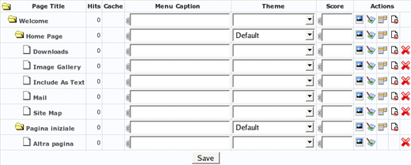

Since MeshCMS pages are simple HTML files, a page cannot contain multiple versions of itself, so different languages must be managed separately. Nevertheless, MeshCMS offers some expedients to deal with multiple languages. Suppose that you have to create a site in two languages: English and Italian. Here are the steps to follow:
start with a welcome page that offers a language choice, or redirects to one of the available languages according to browser settings for example;
create a directory for each language, making sure that the each directory is named after the language code (i.e.
enanditin our example);in your theme, use the <cms:setlocale> tag without specifying the
valueattribute. This way the locale code will be taken from the url, and will beenoritaccording to the page that is currently displayed;
finally, apply the theme to both home pages, so navigation menus will start from the language root instead of the site root.

This way you get a site that separates languages correctly. You could also put common images in a directory at the root level (e.g. /images).

With a bit of code in the theme, you can implement a language menu that sends to other versions of the same page or to the home page in other languages, depending on how you prefer to let visitors change language.